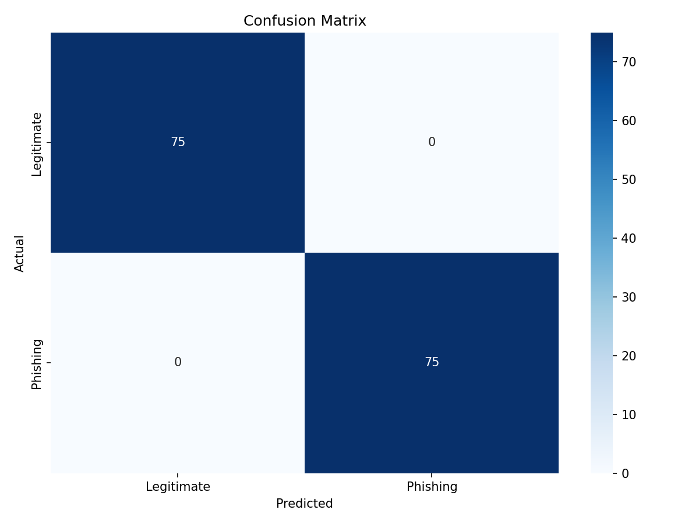
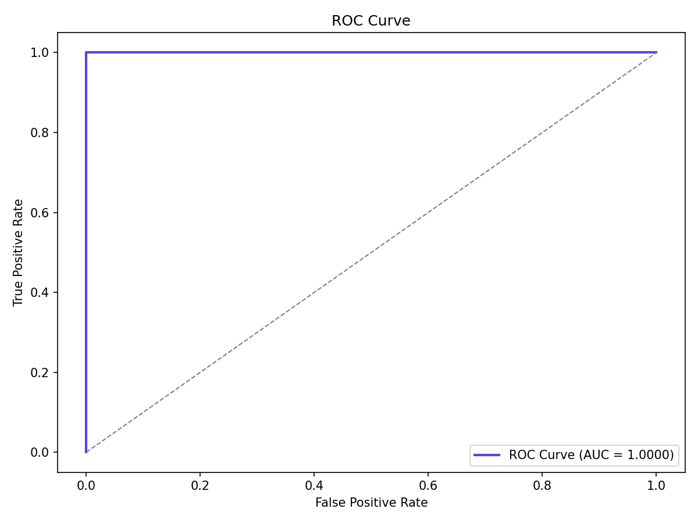
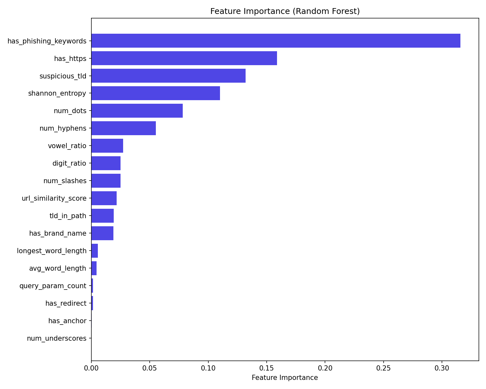
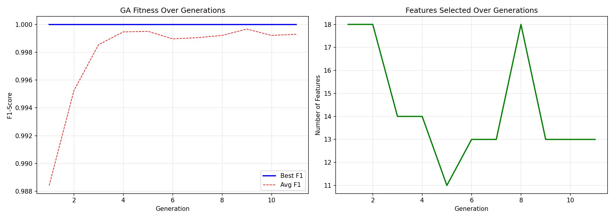

Project Title
PhishGuard AI: URL Phishing Detection Using Machine Learning, Genetic Algorithm, and QR Scanning
| Under the subject | Artificial Intelligence Mini Project |
| Year / Semester | S.E. / IV |
| Submitted by |
[Student Name 1 - Roll No.] [Student Name 2 - Roll No.] [Student Name 3 - Roll No.] [Student Name 4 - Roll No.] |
| Under the guidance of | [Guide Name] |
| Subject Teacher | [Subject Teacher Name] |
| Academic Year | 2025-2026 |
Phishing is a cyberattack in which an attacker tries to trick a user into opening a fake link or revealing sensitive information such as passwords, OTPs, or banking details. Since URLs are the first visible indicator of many phishing attacks, automatic URL analysis is a practical way to detect threats quickly.
This project, PhishGuard AI, is a local phishing URL detection system built using Python and Machine Learning. It extracts numerical features directly from a URL string, applies Genetic Algorithm based feature selection, and classifies the URL using a voting ensemble of Random Forest, XGBoost, and LightGBM. The system also supports QR code scanning so that suspicious URLs hidden inside QR codes can be analyzed.
Manual inspection of URLs is difficult for normal users, especially when attackers use typo-squatting, suspicious top-level domains, URL shorteners, encoded strings, excessive subdomains, or QR-code based phishing. The goal of this project is to build a fast and practical system that can classify URLs as legitimate or phishing using only locally extracted URL-based features.
The system focuses on URL-based phishing detection and does not rely on external APIs, DNS lookups, or webpage downloads. This keeps the solution lightweight and fast. The current implementation works on a locally prepared dataset of labeled legitimate and phishing URLs and can be extended further with live threat intelligence in future versions.
The project design is aligned with recent work in phishing URL detection, feature selection, ensemble learning, and QR-code decoding.
| Ref. | Work / Source | Key Idea | Relevance to This Project |
|---|---|---|---|
| [1] | Kocyigit et al. (2024) | Genetic Algorithm based feature selection helps reduce unnecessary URL features while improving model quality and efficiency. | Supports the use of GA for selecting the most informative phishing features. |
| [2] | MDPI Electronics (2022) | GA-embedded phishing detection shows that evolutionary search is effective for optimizing feature subsets in URL-based detection systems. | Motivates the custom GA used in this system. |
| [3] | Shin et al. (2022) | Heterogeneous ensemble models outperform single models for malicious webpage detection. | Supports using a voting ensemble instead of a single classifier. |
| [4] | scikit-learn RandomForestClassifier documentation | Random forests combine many decision trees to improve predictive accuracy and reduce overfitting. | Used as one of the base learners in the ensemble. |
| [5] | XGBoost Python API documentation | XGBClassifier provides gradient-boosted decision trees suitable for high-performance classification. | Used as the second ensemble member. |
| [6] | LightGBM LGBMClassifier documentation | LightGBM provides efficient gradient boosting on tabular data. | Used as the third ensemble member. |
| [7] | Flask Quickstart documentation | Flask provides simple routing and request handling for web applications. | Used to expose prediction and QR scan APIs. |
| [8] | OpenCV QRCodeDetector documentation | detectAndDecode() supports direct QR-code detection and decoding from an input image. | Used for extracting URLs from uploaded QR images. |
Based on the above findings, this project combines URL feature engineering, Genetic Algorithm based feature selection, voting ensemble classification, and QR-code scanning into one practical phishing detection pipeline.
| Component | Requirement |
|---|---|
| Operating System | Windows / Linux / any Python-supported desktop OS |
| Programming Language | Python 3.x |
| Web Framework | Flask 3.0.0 |
| Data Processing | Pandas 2.1.4, NumPy 1.26.2 |
| Machine Learning | scikit-learn 1.3.2 |
| Boosting Libraries | XGBoost 2.0.3, LightGBM 4.1.0 |
| Visualization | Matplotlib 3.8.2, Seaborn 0.13.0 |
| Model Persistence | joblib 1.3.2 |
| Computer Vision | opencv-python-headless 4.9.0.80 |
| Component | Suggested Specification |
|---|---|
| Processor | Any modern dual-core or better CPU |
| RAM | 4 GB minimum, 8 GB recommended |
| Storage | Around 1 GB free space for code, model, plots, and dataset |
| Internet | Not required for prediction after setup |
The project uses a locally prepared labeled dataset stored in data/raw/urls.csv and data/processed/features.csv.
The proposed system has two user entry points: URL text input and QR image upload. If a QR image is uploaded, the system first extracts the hidden URL using OpenCV. The URL is then passed to the same feature extraction and classification pipeline used for normal text input.
| Parameter | Value |
|---|---|
| Population Size | 40 |
| Maximum Generations | 30 |
| Crossover Rate | 0.8 |
| Mutation Rate | 0.03 |
| Tournament Size | 5 |
| Elitism Count | 2 |
| Minimum Features | 5 |
| CV Folds | 5 |
| Early Stop Patience | 10 |
| Random Seed | 42 |
The GA selected 18 out of 33 engineered features:
The dataset preparation logic is implemented in data/download_datasets.py. The script stores curated legitimate URLs, stores curated phishing URLs, generates additional synthetic variations, balances both classes, saves labeled URLs to data/raw/urls.csv, and extracts URL features to data/processed/features.csv.
Feature extraction is implemented in src/feature_engineering.py. The system computes 33 features grouped into lexical features, structural features, suspicion indicators, statistical features, and brand similarity features. This design allows the system to work offline without fetching webpage content.
The custom GA is implemented in src/genetic_algorithm.py. Each chromosome is a binary mask over the 33 features, where 1 means the feature is selected and 0 means the feature is dropped. The fitness value is the mean cross-validated F1-score of a Random Forest classifier. The algorithm uses random initialization, tournament selection, single-point crossover, bit-flip mutation, elitism, and early stopping.
The training pipeline is implemented in src/train.py. It loads processed features, performs an 80:20 stratified split, runs the Genetic Algorithm on the training set, keeps only GA-approved features, scales them, trains a soft voting ensemble, evaluates the model, and saves the trained model to models/model.pkl.
Prediction logic is implemented in src/predict.py. For each input URL, the module performs pre-validation, extracts features, selects GA-approved features, scales the vector, predicts phishing probability, maps the score to a risk level, and generates human-readable risk factors.
QR scanning is implemented in src/qr_scanner.py using OpenCV. The uploaded image bytes are converted into a NumPy array, decoded into an image matrix, and then passed to cv2.QRCodeDetector().detectAndDecode() to extract the URL.
The Flask server is implemented in app/app.py and provides endpoints for the main interface, URL classification, QR-image scanning, model metadata, and plot serving.
| File | Purpose |
|---|---|
| data/download_datasets.py | Dataset creation and feature CSV generation |
| src/feature_engineering.py | Extracts 33 URL features |
| src/genetic_algorithm.py | Custom feature-selection GA |
| src/train.py | Full training and evaluation pipeline |
| src/predict.py | Single URL inference logic |
| src/qr_scanner.py | QR URL extraction |
| app/app.py | Flask backend |
| app/templates/index.html | Web interface markup |
| app/static/style.css | UI styling |
| app/static/script.js | Frontend interactions |
| Metric | Value |
|---|---|
| Accuracy | 1.0000 |
| Precision | 1.0000 |
| Recall | 1.0000 |
| F1-Score | 1.0000 |
| ROC-AUC | 1.0000 |
| Actual / Predicted | Legitimate | Phishing |
|---|---|---|
| Legitimate | 75 | 0 |
| Phishing | 0 | 75 |
This means the saved model correctly classified all 150 test samples in the available evaluation split.
| Test URL | Predicted Class | Risk Level | Phishing Probability |
|---|---|---|---|
| https://www.google.com | Legitimate | Safe | 0.04% |
| http://paypal-secure-login.tk/verify | Phishing | Dangerous | 99.98% |
| http://www.google.com@evil.com/login | Phishing | Dangerous | 93.57% |
Example risk factors generated by the model include suspicious TLDs, phishing keywords, missing HTTPS, use of the @ symbol, redirect patterns, and similarity to known brand domains.




PhishGuard AI is a practical phishing URL detection system that combines feature engineering, Genetic Algorithm based feature selection, ensemble learning, and a web interface into one complete workflow. The project successfully demonstrates how lexical and structural URL analysis can be used to detect phishing attempts without depending on external services.
The saved model metadata shows excellent results on the current evaluation split, with accuracy, precision, recall, F1-score, and ROC-AUC all equal to 1.0000. In addition, the QR scanning module extends the system beyond plain text URLs and makes it relevant for modern quishing threats.